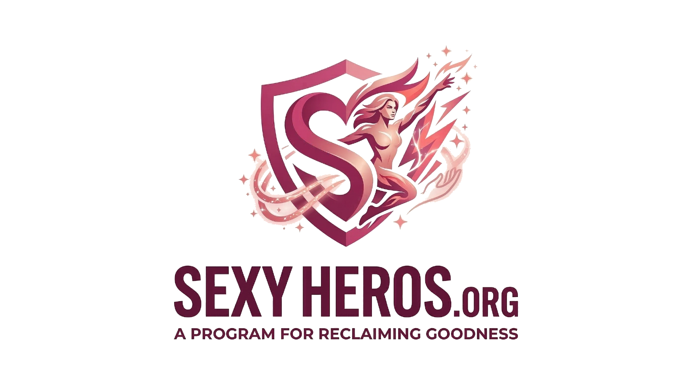
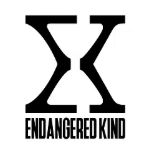

THIN BLACK AND BROWN LINE USA, NPC.
TBBLUSA.ORGThe premier advocacy network for minority protection and business logistics. Bridging the gap between sovereign identity and national infrastructure.
GO TO MAIN COMMAND
GREAT SEAL OF THE BLACK AND BROWN PEOPLE FOUNDATION MONUMENT
SOVEREIGN MONUMENTEstablishing the permanent legacy and historical recognition of Black and Brown people in the United States.
VIEW MONUMENT
SEXYHEROS FOUNDATION
SEXYHEROS.ORGThe aesthetic and humanitarian branch of the AEAH network. Focused on empowerment through identity and visual sovereignty.
ACCESS SEXY PORTAL
KOINONIA GRACE FOUNDATION
SOVEREIGN MOVEMENTA Philadelphia-based nonprofit strengthening the foster care system by implementing rigorous digital verification standards to certify high-integrity protectors for youth.
GO TO MISSION
BLACK & BROWN BUREAU OF NATIONAL IDENTITY REGISTRY, INC.
TGSOBAUSA.ORGThe official bureau for the registration and validation of Black and Brown national identity and sovereign records.
IDENTITY REGISTRY
AGAINST ELECTRONIC ABUSE AND HARASSMENT, NPC.
AEAH.ORGAdvocacy against electronic targeting, harassment, and unauthorized digital interference in community sanctuary spaces.
ACCESS AEAH NETWORK
ENDANGERED KIND (PHILLY)
VIOLENCE INTERRUPTIONPhiladelphia-based violence interruption and youth empowerment. Focused on peace-building through credible messengers and community healing.
LOCAL IMPACT